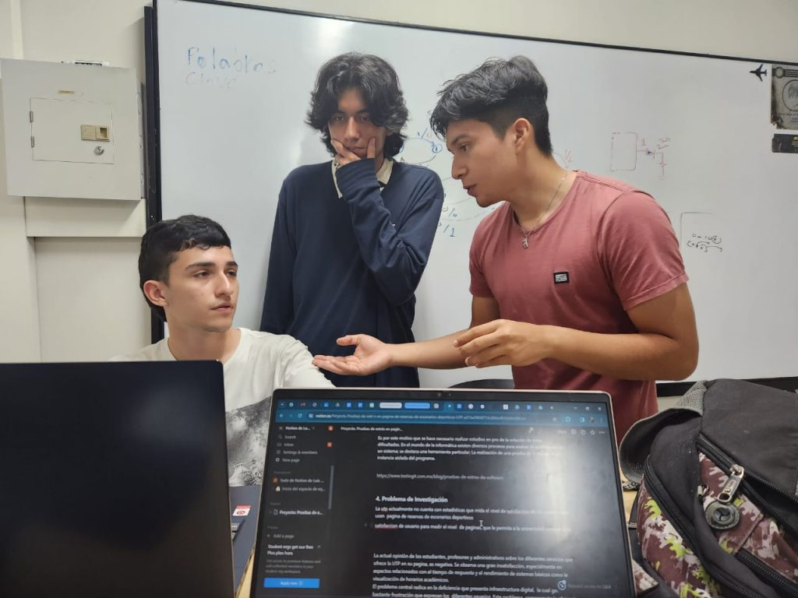
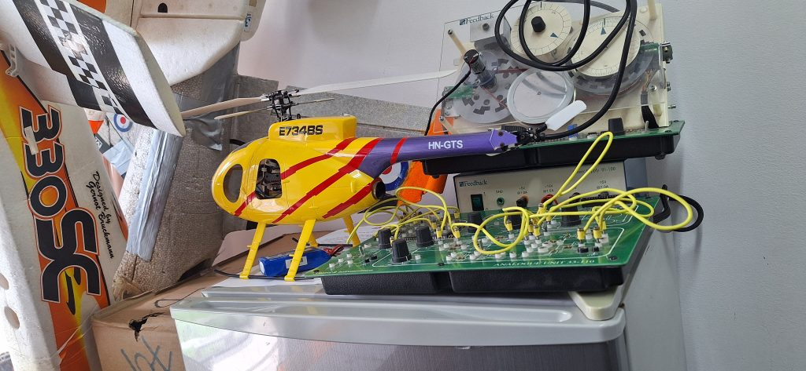
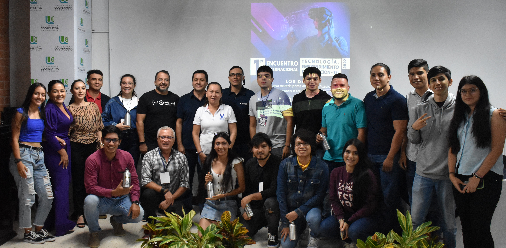

¿Quiénes somos?
Menú de navegación

Sobre el Semillero
La sección “Sobre el Semillero” presenta de forma clara el origen, propósito y enfoque del grupo. Incluye su misión y visión, los objetivos que orientan su trabajo y las principales líneas de investigación en las que desarrolla sus proyectos.
Ver másclick aqui para ingresar

Eventos
La sección de eventos presenta las actividades académicas y científicas en las que participa o que organiza el semillero. Allí se pueden encontrar encuentros de investigación, congresos, hackathons y ferias tecnológicas, donde se socializan proyectos, se comparten conocimientos y se promueve la innovación y el trabajo colaborativo entre estudiantes e investigadores.
Ver másclick aqui para ingresar

Equipos de Trabajo
La sección de equipos de investigación presenta los grupos de trabajo del semillero, organizados por áreas o líneas específicas, donde los integrantes colaboran en el desarrollo de proyectos y fortalecen sus habilidades investigativas.
Ver másclick aqui para ingresar
Resultados de Investigación
La sección de resultados de investigación presenta los proyectos desarrollados por el semillero y los logros obtenidos, evidenciando la aplicación de conocimientos para resolver problemáticas reales y generar soluciones tecnológicas con impacto académico.
Ver másclick aqui para ingresar

Productos Académicos
La sección de productos académicos reúne los resultados formales del semillero, como libros, artículos, informes y ponencias, que evidencian el conocimiento generado y el aporte académico de sus investigaciones.
Ver másclick aqui para ingresar
Galería de Imágenes
La sección de imágenes muestra evidencias visuales de las actividades, proyectos y eventos del semillero, permitiendo apreciar el trabajo realizado y la participación de sus integrantes.
Ver másclick aqui para ingresar
Sección de Contacto
La sección de contacto proporciona información para que los interesados puedan comunicarse con el semillero, ya sea para obtener más información, colaborar en proyectos o participar en sus actividades, facilitando la conexión entre el semillero y la comunidad académica y tecnológica.
Ver másclick aqui para ingresar
Noticias

INNOVATECH Destacados en encuentro regional
Fecha: Abril 2026

INNOVATECH lanza nueva plataforma académica
Fecha: Marzo 2026
Nuevos integrantes en el semillero INNOVATECH